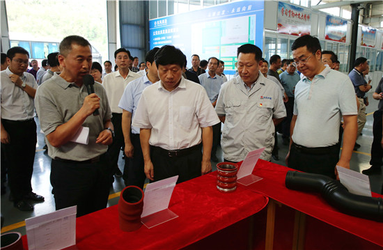
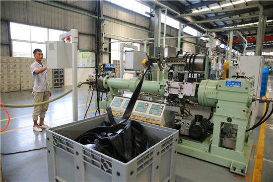

全市二季度项目拉练会与会代表到张湾参观
本网讯 （徐春晓 张挺 胡罗宁）7月18日下午，全市二季度重点项目拉练会与会代表到张湾参观。市委书记张维国，市委副书记、市长陈新武，市政协主席师永学，市人大常委会党组书记、常务副主任张歌莺等市“四大家”领导，各县（市、区）党政主要负责人、市直相关部门主要负责人莅临参观。区领导刘宇飞、周玲等陪同参观。

参观圣基恒信工业装备技术项目
圣基恒信工业装备技术项目是参观的第一站。该项目总投资1.5亿元，占地26亩，目前已完成投资1.3亿元并试生产，主要业务为自动化生产线研发制造、机器人系统集成。预计项目竣工后年产值3亿元，税收达3000万元以上，可带动就业200人。

圣基恒信生产车间
与会代表沿着生产线一边观看机器人演示搬运、抓取等动作，一边听取情况介绍。大家饶有兴趣的沿途参观，认为该项目创新能力强，产品附加值高，市场前景十分看好。
参观东风美晨汽车流体系统扩能改造项目
随后，大家来到东风美晨汽车流体系统扩能改造项目。该项目总投资1亿元，主要进行汽车橡胶流体管路及空气弹簧的研发生产，项目投产后年生产能力2000万件，年产值达2.5亿元，可上缴税收2000万元。该项目涡轮增压胶管生产线使用机器人、龙门导轨、AGV小车等等智能化设备，生产线硫化过程中产生的废气通过管道回收集中处理，实现自动化生产、绿色生产。
东风美晨生产车间
参观完东风美晨项目，张维国拿起话筒动情地说，该项目一平方米的车间能产出6万元的产值，项目土地利用效益高，把每一寸地、每一寸厂房用到极致的做法值得借鉴，项目发展前景值得期待。